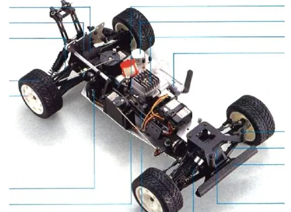

京商 FW-01

引用元画像：rcscrapyard.net
📋 基本情報
| メーカー | 京商（Kyosho） |
|---|---|
| 機種名 | FW-01（GP10シリーズ） |
| シャーシ略称 | FW-01 |
| 型番 | 3014（Peugeot 405 Rally Car） ※他にもToyota Supraなど複数のボディバリエーションあり |
| 発売時期 | 1989年頃 |
| 価格 | 詳細不明（生産終了のため） |
| 生産状況 | 生産終了 |
| カテゴリー | ラジコンカー（1/10スケール GPツーリングカー） |
| サブカテゴリー | .10エンジン搭載 4WDラリーカー |
| シリーズ | GP10シリーズ（Radio Controlled .10 Engine Powered 4WD Rally Car） |
📏 シャーシスペック
| 全長 | 詳細不明 |
|---|---|
| 全幅 | 詳細不明 |
| 全高 | 詳細不明 |
| ホイールベース | 詳細不明 |
| フレーム | アルミプレートシャーシ |
| 全備重量 | 詳細不明 |
⚙️ 駆動系
| 駆動方式 | 4WD（シャフト/ベルトドライブ方式） |
|---|---|
| デフギヤ | ギヤデフ×3（フロント・センター・リア） |
| ドライブシャフト | ドッグボーンドライブシャフト＋プロペラシャフト |
| ベアリング | フルボールベアリング仕様 |
| エンジン | OS 10FP .10エンジン（リコイルスターター付属） ※別売のラジオシステム・燃料が必要 |
🔧 サスペンション
| 形式 | 4輪独立懸架 |
|---|---|
| ダンパー | コイルスプリング＋オイルダンパー×4本 |
| ステアリング | 詳細不明 |
💡 特徴
GP10シリーズ - .10エンジン搭載4WDラリーカーの先駆け
- 1989年頃に登場した京商のGP10シリーズシャーシ
- .10エンジン（OS 10FP）搭載の本格的4WDラリーカー
- Peugeot 405 Rally Car、Toyota Supraなど複数のボディバリエーション展開
- ARTR（Almost Ready To Run）仕様で一部組み立て済み
本格的4WDシャーシ構成
- アルミプレートシャーシ採用（高剛性・軽量）
- シャフト/ベルトドライブ方式の4WDシステム
- フロント・センター・リアの3つのギヤデフ搭載
- コイルスプリング＋オイルダンパーの本格サスペンション
- フルボールベアリング仕様で滑らかな動作
OS 10FPエンジン標準装備
- 信頼性の高いOS（小川精機）製.10エンジン搭載
- リコイルスターター付属で始動が容易
- 未塗装レクサンボディシェル付属
🔧 ぽすとそに工房での修理実績
修理難易度
★★★★★（非常に困難）
⚠️ 絶版のため入手困難なシャーシです。パーツ供給も極めて少ないため、修理は非常に困難です。
よくある故障・注意点
- 1989年頃の絶版機種のため、パーツ入手が極めて困難
- ギヤデフのメンテナンスが重要（3箇所のデフ調整）
- オイルダンパーのオイル漏れ（Oリング劣化）
- ベルトの劣化・伸び（駆動効率低下）
- .10エンジンのメンテナンス（燃料系統、グロープラグなど）
修理のポイント
- パーツが入手困難なため、破損には十分注意
- 他の京商GPシリーズとの互換パーツを探す必要あり
- ギヤボックスの定期的なグリスアップ
- オイルダンパーのOリング交換・オイル補充
- ベルトの張り調整・交換（劣化している場合）
- ボールベアリングの清掃・注油
その他の特徴
- 1980年代後半のビンテージマシン
- 当時の最新技術を結集した4WDシステム
- コレクターズアイテムとしての価値が高い
- レストアには相当の知識と経験が必要
- 複数のボディバリエーションが存在（Peugeot 405、Toyota Supraなど）